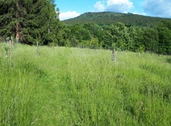
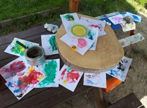
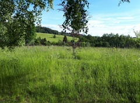

Kdo je Maya?

Ahoj, jmenuji se Maya a při rodičovské jsem se rozhodla naučit vytvářet funkční webové stránky. Pracovala jsem dlouhé roky v marketingu, vedení redesignu webových projektů bylo vždy součástí mé agendy, ale nikdy jsem sama žádný web nevytvořila a to bych ráda změnila.
Mám pocit, že tvorba webů by mohla být zajímavá práce v mé další životní etapě.
Jsem štastnou mámou dvou skvělých holčiček a manželkou muže s velkým M.
Co mám ráda?
Mám ráda svou rodinu a společně strávený čas, přírodu, oba své domovy - v Praze i v Lužických horách, dobré jídlo a jeho přípravu...
  Jak mě kontaktovat?
Mé projekty najdeš na GitHubu.
Napsat mi můžeš na email.